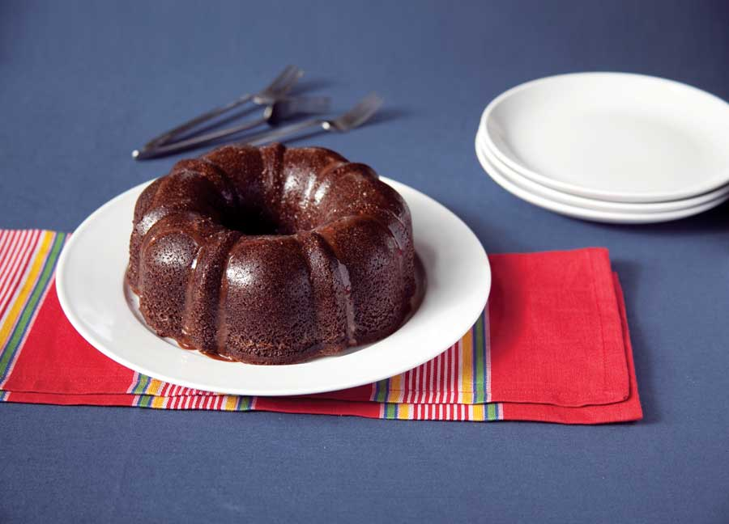
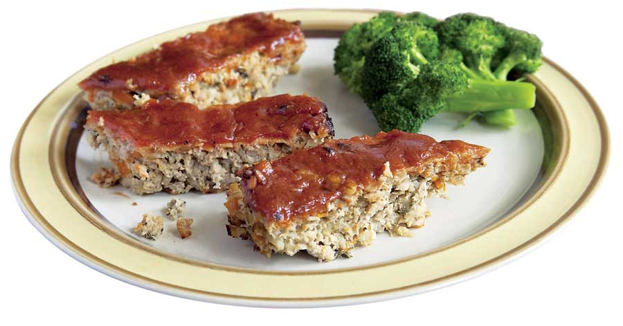

Whole barley is right up there with the best of the whole grains, reducing risks of heart disease, obesity, inflammation, cancer and even gum disease. It’s loaded with antioxidants, including tocotrienols, a form of vitamin E that may reduce damage to your DNA. The combination of fibers in barley gives it a low “glycemic index” score, which means that it has a minimal effect on blood sugar levels. Several studies are also showing that eating barley - and any whole grains - is great for both avoiding and treating Type 2 Diabetes.
Among the stacks of recent studies showing the health benefits of whole grains, a few were conducted to see whether whole grain barley might be the best answer to cholesterol problems. One study put men with high cholesterol on diets with varying levels of soluble fiber from barley. The men with the highest barley fiber intake had the best results, with drops in total cholesterol of up to 20 percent, LDL (the bad kind of cholesterol) up to 24 percent, and triglycerides up to 16 percent.
If you are like most Americans, the last time you saw barley, it was bobbing about in a beef soup. The most common way to buy barley is pearled, which means the bran layer has been sanded off to make the barley cook quickly and have a soft texture. The strain of barley that is grown for pearling has a stubbornly clingy “glume,” or inedible husk, that has to be removed mechanically. While the beta glucans that lower your cholesterol are still in there, the loss of the bran strips away many of the nutrients. Better to try sexy-sounding “naked” barley, also called hulled or hull-less, which comes from varieties that have looser glumes, so the bran layer can be left intact. Artisanal growers are bringing back varieties such as ‘Purple Prairie,’ ‘Black’ and ‘Golden Waxy Barley.’
Try ordering specialty varieties from Timeless Foods, Purcell Mountain Farms and Gold Mine Natural Food. (You can grow hull-less barley in your own yard, too. Visit the Mother Earth News Seed and Plant Finder to find barley seeds.)
Like most grains, barley can be used in many forms, from whole to flour. Rolled or flaked barley is similar to rolled oats. It also can be chopped or cracked, and is often added to multigrain hot cereals in that form. Barley flour contains less gluten than whole wheat flour, but it is not gluten-free. Baking with it is like using a low-protein pastry flour, producing tender results in cakes and biscuits.
Barley seems like the perfect antidote to many of the things that ail us. Try these recipes to bring this nutritious grain into your kitchen:
Chocolate Barley Bundt Cake Recipe
Greek Barley Salad Recipe
Japanese Barley Bowl Recipe
Turkey and Barley Meatloaf with Sage Recipe
|
 EMILY HELLER This Chocolate Barley Bundt Cake is secretly whole grain and not too high in fat. Don’t tell anyone who might think that’s a bad thing! |
 EMILY HELLER Pearled barley will disappear into your meatloaf and boost flavor. |
EMILY HELLER Bored with white rice? Try nutty barley in Asian dishes instead! |
|
EMILY HELLER This bright barley salad dances to a Mediterranean tune. |
|
|